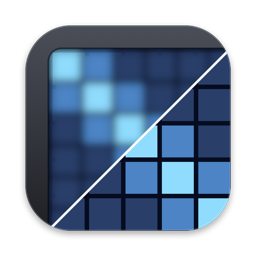
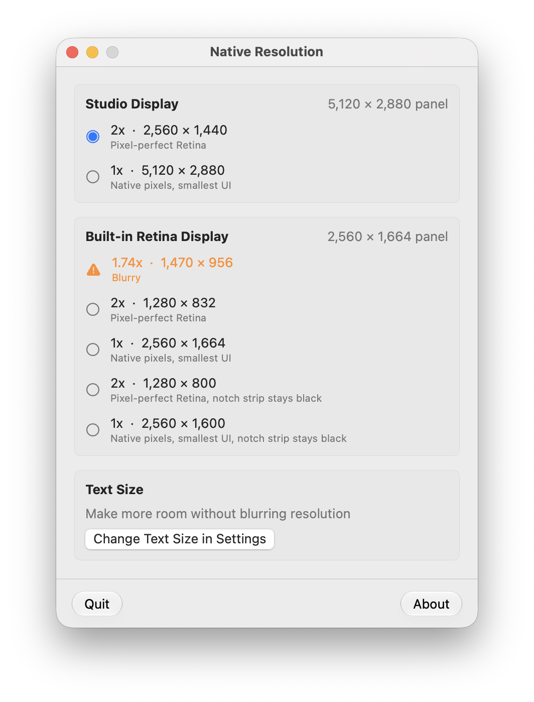

Native Resolution
Use your Mac display at the resolution it was built for
Download for MacFree · Requires macOS 14 or later · Build 5, Nov 25, 2026


Use your Mac display at the resolution it was built for
Download for MacFree · Requires macOS 14 or later · Build 5, Nov 25, 2026
